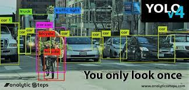

Real-Time Object Detection with Pre-eminent Speed and Precision using YOLOv4
International Journal of Research in Engineering, Science and Management (Volume 4, Issue 7)
Abstract
Improvements in technology have led to digitalization. Chatbots have become significant when it comes to transformation driven by mobility. Chatbots are meant to have interaction with humans. The conversation might take place in terms of speech and text inputs. There are varieties of chatbots implemented based on the complexity of human questions. Chatbots are being implanted in a variety of areas like HealthCare, Marketing, Entertainment, Education and so on. Because of its massive usage, it becomes significant to look after the usability of chatbots. People using chatbots will look for improvised features like reduced response time, user experience, consistent reply, relevancy, accuracy and precision, Multi-lingual, personalization, increased efficiency. So, the main intention behind this paper is to provide insights regarding amelioration done in chatbots in various areas. The research paper provides in-depth information regarding limitations and heuristics followed to improve the usability of chatbots in various aspects. In addition to this, Performance metrics on which chatbots are evaluated are included